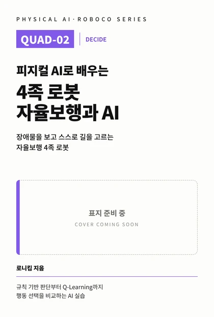

웹 전용 · 영상 중심
책에는 담을 수 없는 움직임을
영상으로 봅니다
QUAD-02의 실행 영상, 같은 조건 비교 영상, 실패 장면, 웹 전용 도전 미션은 책 출간과 함께 이곳에 공개합니다. 영상에는 무엇을 볼지만 적고, 이유와 방법은 책의 해당 Chapter로 이어집니다.
최종 미션 실행 영상 출간 시 공개
대표 미션 — 장애물 앞에서 멈춘 뒤, 규칙 또는 학습된 정책으로 방향을 골라 우회하고 다시 걷게 한다.
Q02-25-00
CHAPTER 25 최종 미션 실행 영상
출간 시 공개
새로 추가된 영상
실습 파일 (Digital Package)
로봇 파일
출간 시 제공센서·상태·행동 선택이 더해진 4족 로봇
시작 파일과 Educational Library
출간 시 제공책의 실습을 실행하는 코드 묶음
실험·미션 기록지
출간 시 제공인쇄해서 쓰는 기록 양식